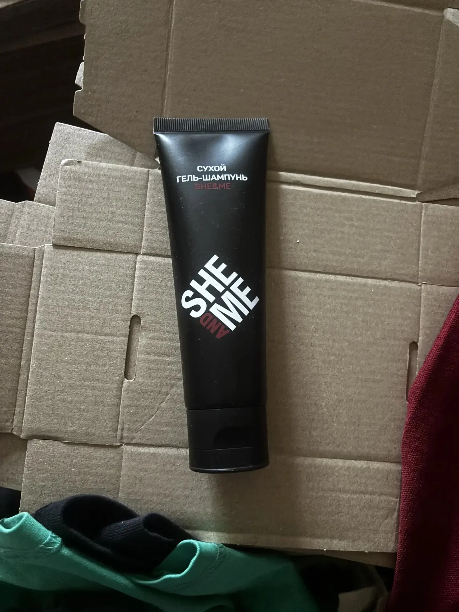
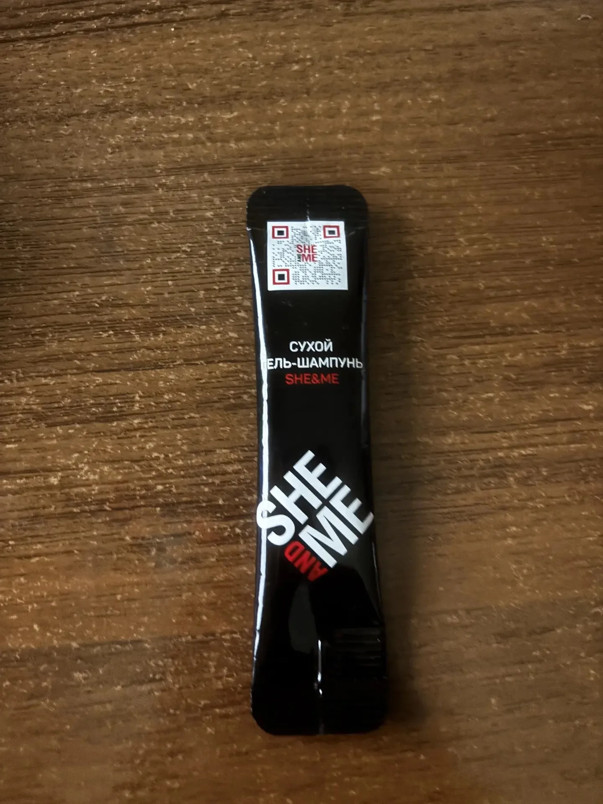

◌
Без воды
Освежите причёску там, где нет возможности вымыть голову.
НОВЫЙ ФОРМАТ УХОДА ЗА ВОЛОСАМИ
She&Me — сухой гель-шампунь для женщин и мужчин. Помогает освежить волосы без воды, вернуть естественный объём и избежать белого пудрового налёта.
Выбрать и купить ↗
РЕАЛЬНЫЙ ПРОДУКТ · 80 МЛКОГДА НУЖНО ОСВЕЖИТЬ ПРИЧЁСКУ
ЗНАКОМЬТЕСЬ, SHE&ME
Сухой гель-шампунь She&Me — современное средство экспресс-ухода за волосами без воды. Лёгкая гелевая текстура деликатно распределяется по волосам, помогает вернуть ощущение чистоты и придать естественный объём без утяжеления. В отличие от аэрозольного сухого шампуня, гель наносится точечно, без распыления и облака порошка.
Компактный формат подходит для поездок, командировок, после тренировки и перед встречей. Средство предназначено для женщин и мужчин, в том числе для тёмных, тонких, окрашенных и кудрявых волос. Результат может зависеть от типа волос и способа применения.
Посмотреть варианты покупки ↗ПОЧЕМУ SHE&ME
Освежите причёску там, где нет возможности вымыть голову.
Гелевая текстура вместо привычной порошковой взвеси.
Наносите средство на выбранные участки волос без распыления.
НА КАЖДЫЙ ДЕНЬ
Когда хочется быстро привести причёску в порядок.
Когда привычный уход недоступен.
Когда каждая минута имеет значение.
СУХОЙ ШАМПУНЬ БЕЗ АЭРОЗОЛЯ
Освежает внешний вид причёски без мытья головы.
Гелевая текстура без характерного порошкового налёта, в том числе на тёмных волосах.
Средство можно распределить на отдельных участках волос.
Не создаёт облака аэрозоля или пудры в воздухе.
Не нужно удалять порошковые остатки с волос.
Удобен для сумки, путешествий и командировок.
She&Me не заменяет полноценное мытьё головы. Утверждения об отсутствии запаха и влиянии на поры кожи требуют подтверждения испытаниями.
КАК ИСПОЛЬЗОВАТЬ
Определите зоны, которым требуется освежение.
Используйте небольшое количество средства согласно инструкции на упаковке.
Распределите средство и уложите волосы привычным способом.
Точную инструкцию и расход необходимо сверить с маркировкой готового продукта.
ЧАСТЫЕ ВОПРОСЫ
Это средство для освежения волос без воды в формате геля, которое наносится без аэрозольного распыления.
She&Me разработан для использования без характерного белого пудрового налёта. Начните с небольшого количества.
Да, сухой гель-шампунь предназначен для женского и мужского ухода за волосами.
Гель позволяет наносить средство локально и не образует аэрозольного облака.
Средство предназначено для применения без воды. Следуйте инструкции на упаковке.
Уточните актуальное наличие через контактную почту в разделе покупки.
ДВА ФОРМАТА SHE&ME
Реальные фотографии упаковок: полноразмерная туба 80 мл и одноразовое саше 5 мл. Выбирайте формат для дома, сумки и поездок.
ОСНОВНОЙ ФОРМАТ
Для регулярного использования дома, в поездках и после тренировок. Точечное нанесение без аэрозоля.
Уточнить наличие ↗
КОМПАКТНЫЙ ФОРМАТ
Одноразовая порция, которую удобно взять с собой в дорогу, на тренировку или в командировку.
Уточнить наличие ↗Оба формата по объёму соответствуют распространённому ограничению до 100 мл на одну ёмкость для жидкостей в ручной клади. Правила перевозки гелей, упаковки и общего объёма зависят от аэропорта, страны и авиакомпании — уточняйте их перед полётом.
SHE&ME / ГДЕ КУПИТЬ
Доступны два формата продукта: туба 80 мл и одноразовое саше 5 мл. Уточните актуальную цену и наличие. Ссылки на маркетплейсы добавим после подтверждения.
Уточнить наличие ↗ЕСТЬ ВОПРОСЫ?
По вопросам продукта, сотрудничества и наличия напишите нам.
sheandme@yandex.ru ↗